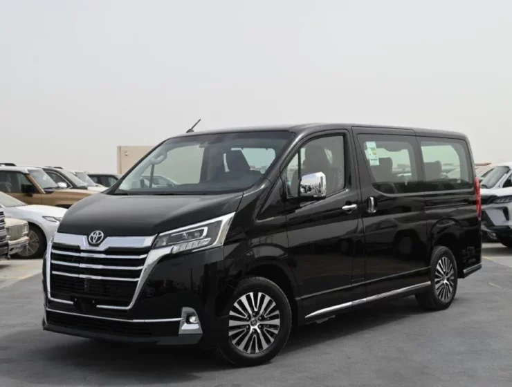

Toyota
Toyota HiAce
فان متعدد الاستخدامات، مشهور بالاعتمادية ويستخدم لنقل الركاب والبضائع في مختلف أنحاء العالم.
فان متعدد الاستخدامات، مشهور بالاعتمادية ويستخدم لنقل الركاب والبضائع في مختلف أنحاء العالم.

| المحرك | 2.8 لتر ديزل تيربو |
| عدد الأسطوانات | 4 |
| القوة | 176 حصان |
| عزم الدوران | 450 نيوتن متر |
| ناقل الحركة | 6 سرعات أوتوماتيك |
| نظام الدفع | خلفي RWD |
| التسارع (0-100) | غير مخصص للأداء الرياضي |
| السرعة القصوى | 170 كم/س |
| عدد المقاعد | 12 - 15 (حسب الفئة) |
| نوع الوقود | ديزل |